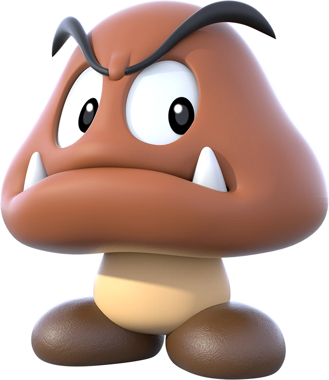
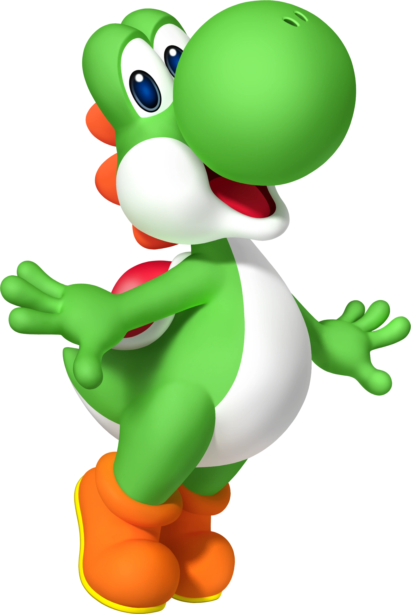

Facts about Mario
Five facts about Mario you didn't know
Mario wasn’t always called Mario

In the early stages of developing Mario’s character Nintendo originally gave him the name Jumpman. Creator Shigeru Miyamoto also toyed with the idea of calling him Mr Video before finally deciding to name him Mario after the landlord of their American Nintendo warehouse.
Mario was the bad guy

Mario, under his original name Jumpman, made his first appearance as a side character in the cult classic Donkey Kong game created by Nintendo in 1981. In this game, Mario mistreated his pet Donkey Kong causing the ape to kidnap his girlfriend.
Not just your average plumber
We all know Mario and Luigi as Mushroom Kingdoms favourite plumbers, however, Mario has had a few career changes in his time. In Donkey Kong Mario is a carpenter, but in other games, he is a medical physician, an archaeologist, champion kart racer, golfing aficionado and even the tycoon of a successful toy manufacturing company.
Goombas were the last enemies added to the game Super Mario Bros
Yup, the first enemy you encounter in Super Mario Bros. was actually one of the last things added to the game. At the last moment Miyamoto decided the game needed an easy enemy that could be killed with a single hit, but cartridge space was so limited at that point that they needed to be as simple as possible, so they basically created a little ball with eyes with a two-frame walking animation. By the by, Goombas are called Kuribo in Japan, which basically translates to “chestnut people”, so my friend that always called them raisins was wrong. I’m totally forwarding this to him.
"Yoshi" isn't Yoshi's full name
There are a lot of things we just sort of accept about Yoshi. For one, the fact that he hatches fully-formed out of the egg, complete with a built-in saddle. That, and we just sort of pretend every dinosaur that comes out of a polka-dotted egg is named "Yoshi," even if that was the name of the guy that got dumped in a bottomless pit two levels back. We can ignore these existential questions because hey, it's a video game. No one was really asking what Yoshi's full name was, but apparently someone at Nintendo thought that was a more important issue to address than a dinosaur being born with shoes. An internal character guide unearthed by Blake Harris revealed something startling about Yoshi. So, Yoshi's full name is... "T. Yoshisaur Munchakoopas." The T. is left ambiguous, though we could guess it stands for "Transportation" or "Tyrannosaurus" or "Travis."
Text and images were shamefully copied from shortlist.com, dorkly.com and blog.sciencemuseum.org.uk
© 2020